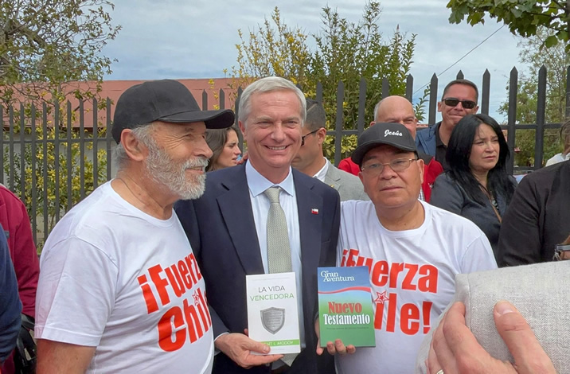
01
Visita al Palacio de Gobierno de Chile
Una visita significativa en el servicio público y la vida del país.
Ministerio Adelfos • 2026
Patricio y Débora
Damos gracias a todos ustedes que nos sostienen en nuestro ministerio de misiones para seguir avanzando. Detrás de cada testimonio y material que mostraremos, ustedes son parte activa de por qué somos un equipo que Dios ha unido por más de 25 años.
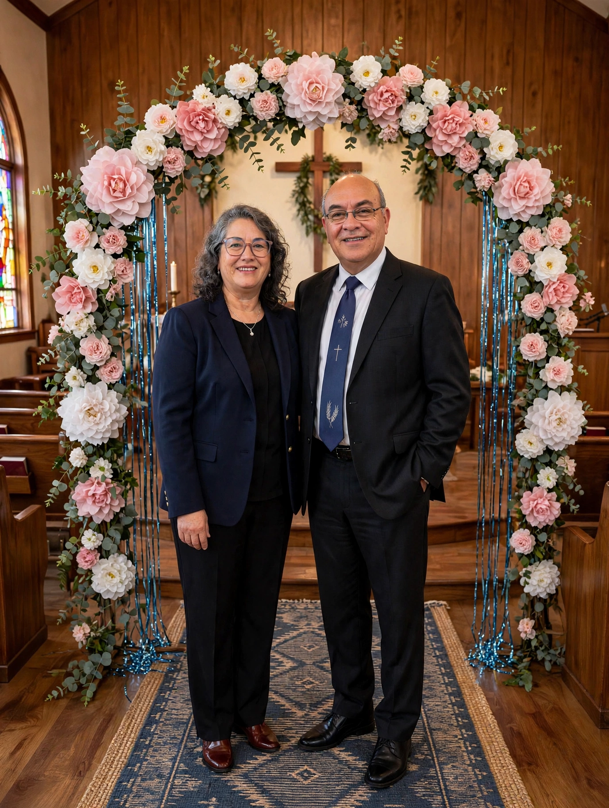
01 • Viaje reciente a Cuba
Dos nuevos misioneros se suman en Manzanillo, Cuba oriental.
Juan y Meyker se suman a otros 28 misioneros, para un total de 30. En un lugar donde hay luz eléctrica cada 3 horas y es muy difícil acceder al agua, levantaron 2 pozos de Samaria.
Hoy la iglesia, los hermanos y los vecinos tienen agua fresca que van a buscar a la iglesia, y el agua se da libremente a quien la necesite, lo que ayuda a ganar almas.
En una iglesia, el pastor Juan realizó bautismos en un tambor porque no había agua corriente. 15 nuevas personas se bautizaron, recibieron a Cristo y hoy participan activamente de la iglesia del Señor.
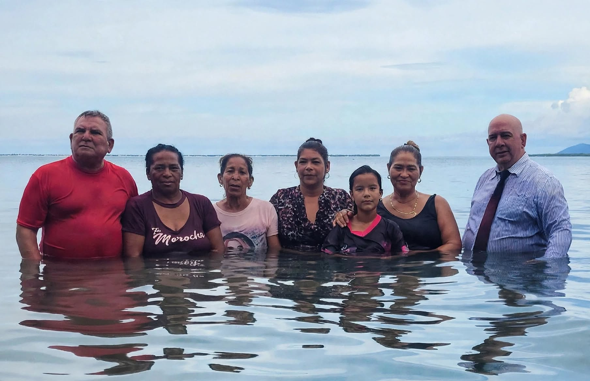
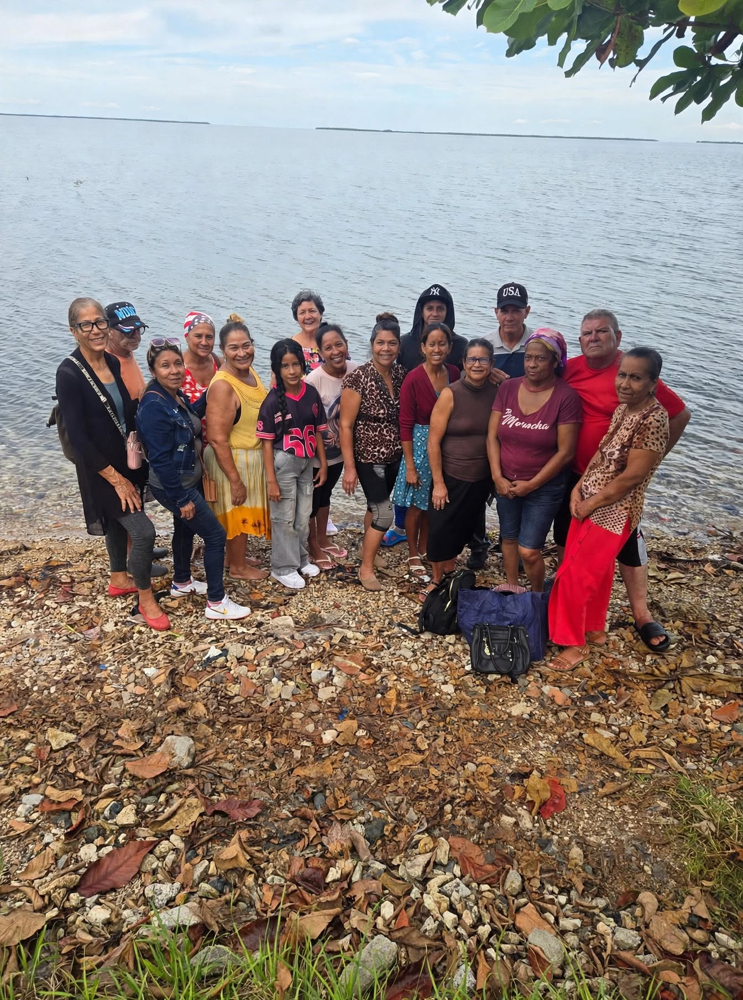
El pozo, lugar de encuentro y de provisión para la comunidad.
02 • Carta de Mayker
📍 Santiago de Chile
“De muerte
a vida”
“Dios me dio la oportunidad de volver a ser capellán en la cárcel en Santiago de Chile. Doy gracias a Dios por esta puerta abierta y por tener el privilegio de visitar y predicar en aquel lugar; siempre hay frutos y personas que pasan de muerte a vida.”
CARTA DE MAYKER • MINISTERIO CARCELARIO
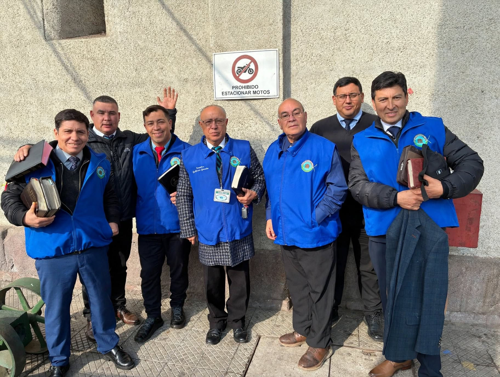
03 • En el camino
Seis momentos de servicio, familia y encuentro con la iglesia.

Una visita significativa en el servicio público y la vida del país.
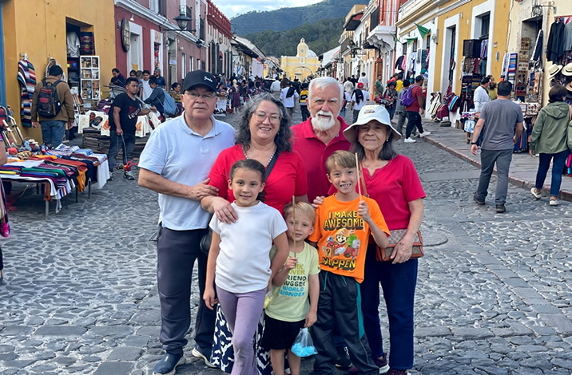
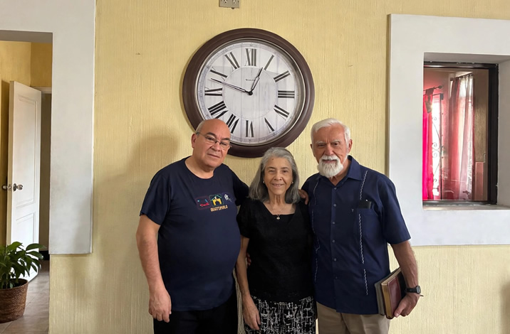
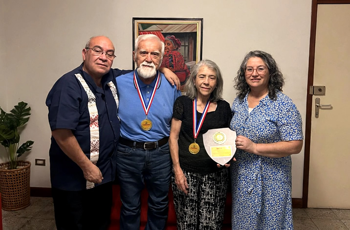
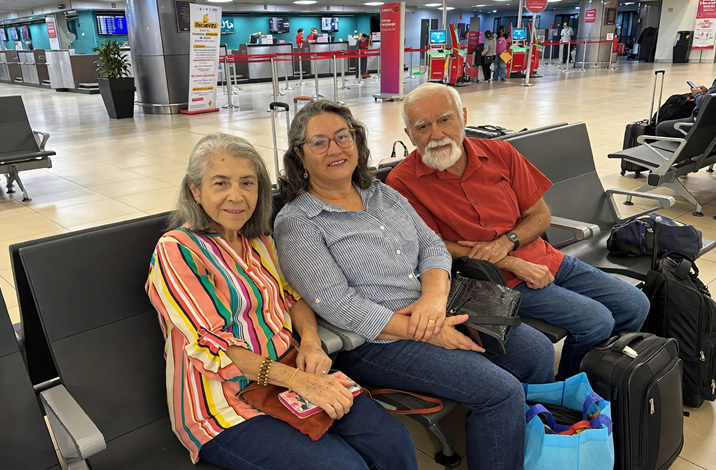
Encuentro con hermanos y servicio más allá de nuestras fronteras.
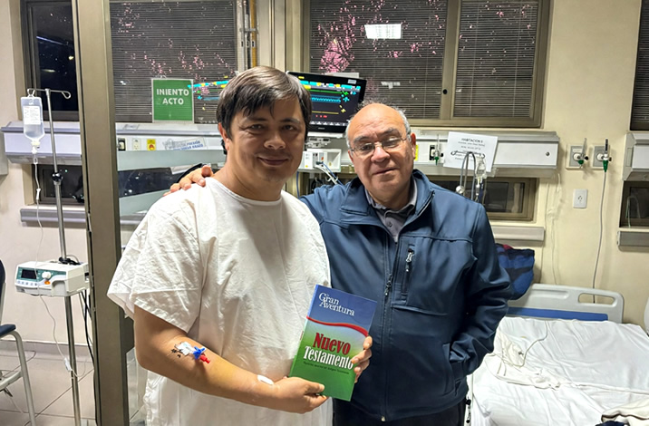
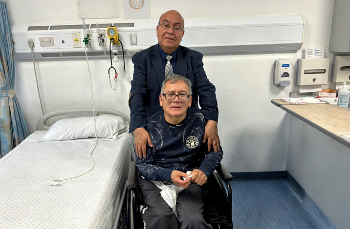
Acompañar, orar y llevar ánimo a quienes más lo necesitan.
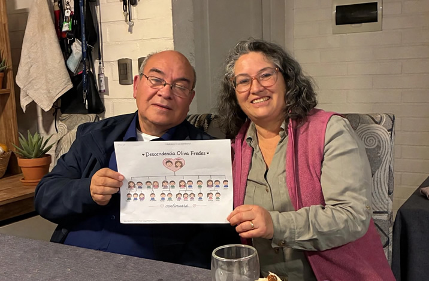
El hogar como primer lugar de servicio, cuidado y gratitud.
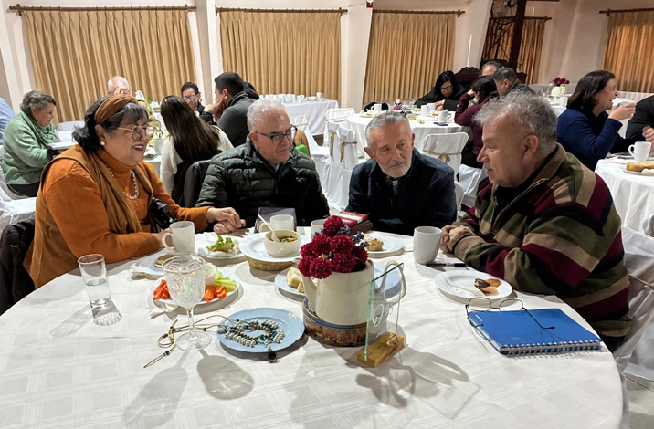
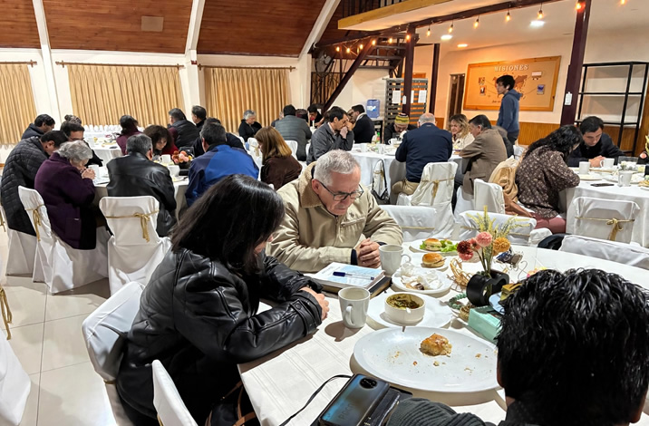
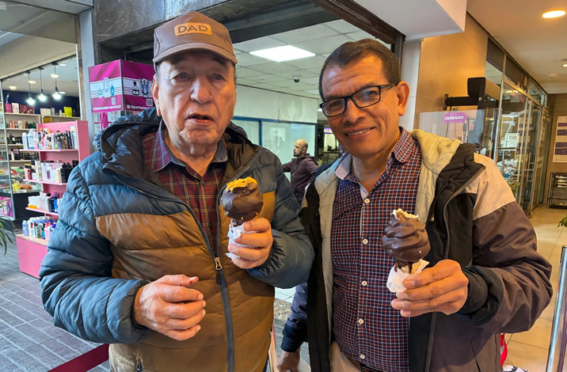
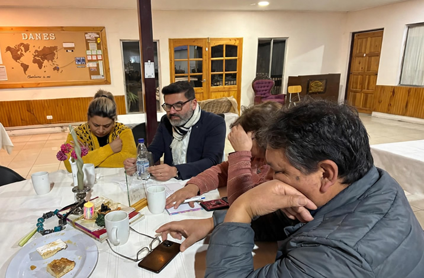
Más de 40 pastores participaron en nuestra conferencia de Adelfos.
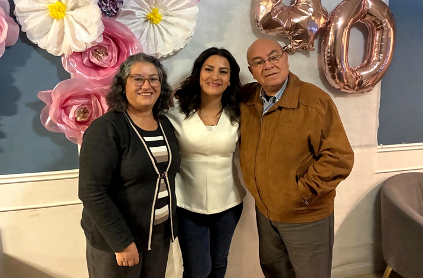
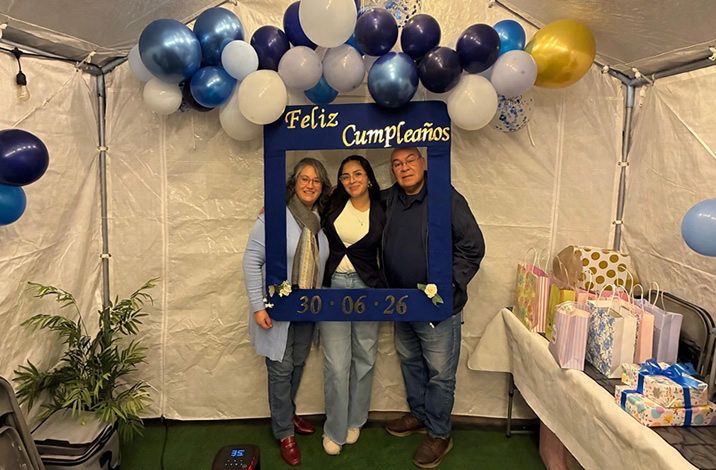
Celebrar la vida y la familia que Dios nos ha confiado.
Dos logros extra
Nos encontró trabajando en el ministerio Fuerza Chile en las casas que se quemaron en Punta de Parra, junto al presidente José Antonio Kast.
Dios me ha permitido compartir la palabra en 3 nuevas iglesias y promover la visión misionera.
Les invitamos a acompañarnos en oración por cada uno de estos motivos, con gratitud por su fidelidad y compañía.
Implante de cadera el próximo mes para poder llegar más lejos.
Aniversario de bodas: 46 años de matrimonio.
Oración por los nuevos misioneros: Bangladés (enviados desde Chile).
Hermano Fernando, quien trabaja en las traducciones en la selva de Perú.
Oración por la vida espiritual de nuestros 7 hijos y 15 nietos.
Gracias por orar con nosotros.
05 • Cierre
“Pero tú aumentarás mis fuerzas como las del búfalo; seré ungido con aceite fresco”.
Salmos 92:10
Seguimos sirviendo a Dios con fuerzas renovadas y gozo que provienen de nuestro Padre celestial, buscando la fuerza del búfalo.
Patricio y Débora, sus siervos en Chile.
La obra de Dios nunca se detiene.